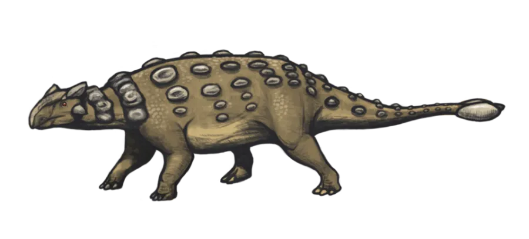

Stegosaurus
🗣️ On prononce : sté-go-so-russ — « le lézard à toit »
Des plaques sur le dos et quatre pointes au bout de la queue !
Bouuuuum !

Qui était Stegosaurus ?
Stegosaurus portait sur le dos deux rangées de grandes plaques osseuses, en quinconce comme les tuiles d’un toit. Elles étaient parcourues de vaisseaux sanguins : elles servaient sûrement à se réchauffer au soleil, à se refroidir, et à impressionner.
Au bout de sa queue se dressaient quatre longues pointes. Les paléontologues les ont surnommées le « thagomizer ». D’un coup de queue, il pouvait percer le flanc d’un Allosaurus !
Sa tête était minuscule par rapport à son corps, et son cerveau était à peine plus gros qu’une prune. Pourtant, il a vécu très longtemps sur Terre : pas besoin d’être savant pour brouter des fougères.
⚡ Son super-pouvoir : Le thagomizer
Quatre pointes d’un demi-mètre au bout d’une queue puissante : l’arme défensive la plus célèbre du Jurassique.
Le savais-tu ?
- Le mot « thagomizer » vient d’une bande dessinée humoristique… et les scientifiques l’ont vraiment adopté !
- Ses plaques pouvaient peut-être changer de couleur quand il s’énervait, en se remplissant de sang.
- Son cerveau pesait environ 80 grammes, pour un corps de 5 tonnes.
🪪 Carte d’identité
| Nom complet | Stegosaurus |
|---|---|
| Signification | « le lézard à toit » |
| Prononciation | sté-go-so-russ |
| Période | 🌿 Jurassique |
| Époque précise | Jurassique supérieur |
| A vécu il y a | 155 à 145 millions d’années |
| Famille | 🛡️ Dinosaures blindés |
| Régime | 🌿 Herbivore — Il ne mange que des plantes : feuilles, fougères, aiguilles de conifères. |
| Où vivait-il ? | Amérique du Nord, Europe |
| Découvert en | 1877, à Colorado, États-Unis |
| Découvert par | Othniel Charles Marsh |
📏 Comparaison de taille
Voici Stegosaurus à côté d’un enfant de 1,30 m.
🎮 Envie de jouer ?
Teste tes connaissances sur Stegosaurus et les autres dinosaures !
À découvrir aussi
 Kentrosaurus
Le cousin africain du Stégosaure, hérissé de piques de la tête à la queue.
🌿 Jurassique
🌿 Herbivore
Kentrosaurus
Le cousin africain du Stégosaure, hérissé de piques de la tête à la queue.
🌿 Jurassique
🌿 Herbivore

Ankylosaurus Un char d’assaut vivant, avec une massue au bout de la queue. 🌸 Crétacé 🌿 Herbivore Dilophosaurus
Le dinosaure au casque double, star incomprise du cinéma.
🌿 Jurassique
🥩 Carnivore
Dilophosaurus
Le dinosaure au casque double, star incomprise du cinéma.
🌿 Jurassique
🥩 Carnivore